Potencia.
Precisión.
Resultados.
Soluciones integrales en construcción y logística. Ejecutamos tus proyectos con flota propia y el respaldo técnico que tu obra exige.
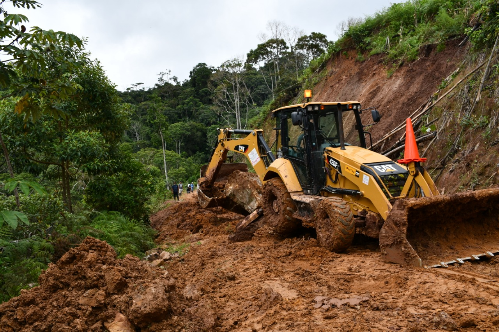
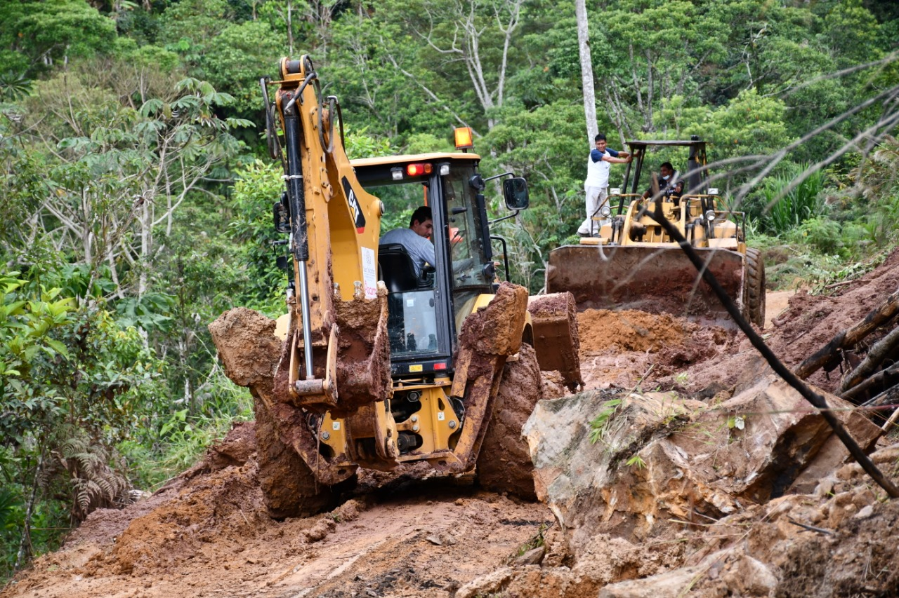
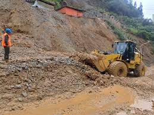
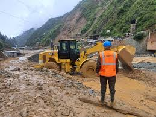
Movimiento de Tierras & Trochas
Transformamos la geografía a favor de tu proyecto. Realizamos trabajos de excavación, nivelación de plataformas y apertura de trochas carrozables, garantizando bases sólidas para cualquier infraestructura civil.
- Cortes, rellenos y nivelación de plataformas masivas.
- Apertura y mantenimiento de vías en zonas complejas.
- Perfilado y compactación de taludes con precisión.
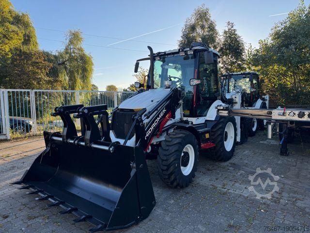

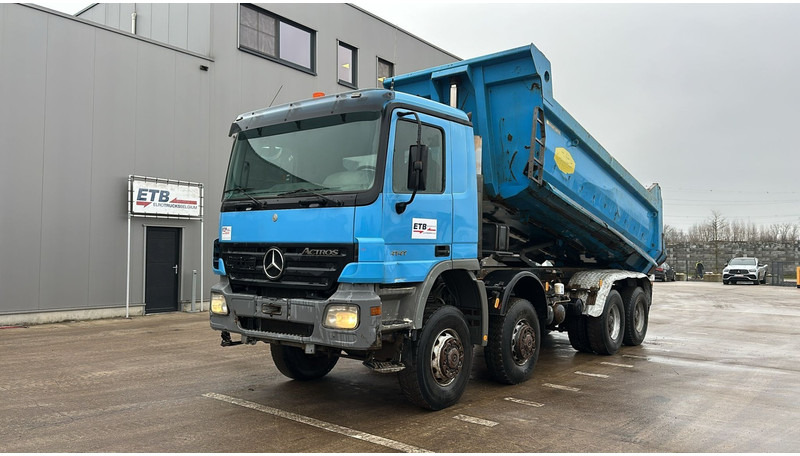
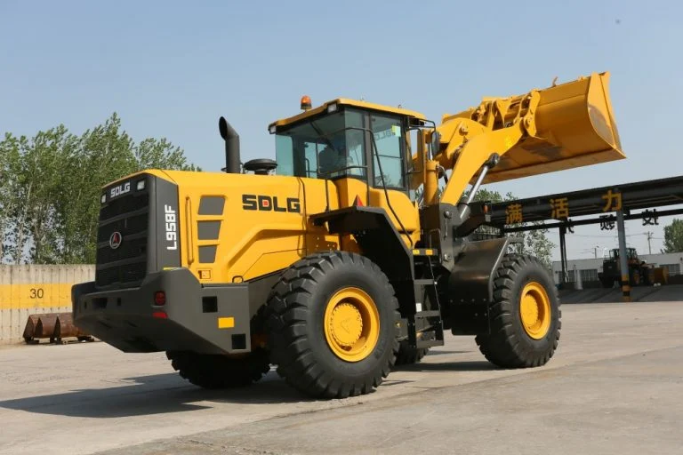
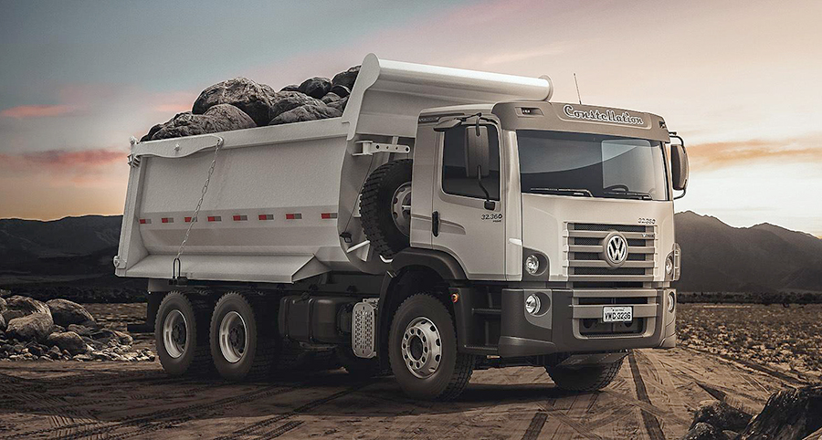
Alquiler de Maquinaria Pesada
Potencia y operatividad garantizada. Ponemos a tu disposición una flota moderna con mantenimiento preventivo al día y operadores calificados para asegurar el máximo rendimiento en campo.
- Cargadores frontales para despacho y carga.
- Retroexcavadoras versátiles para múltiples frentes.
- Remolcadores y equipos de apoyo logístico.
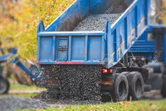

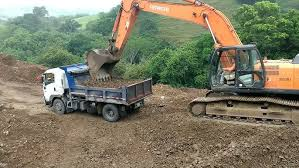

Abastecimiento de Material
Suministro a gran escala para empresas constructoras y consorcios. Movilizamos grandes volúmenes de agregados directamente desde nuestras fuentes de extracción hasta tu punto de acopio.
- Atención exclusiva a proyectos de infraestructura masiva.
- Logística de despacho puntual con flota propia.
- Garantía de volumen y granulometría exacta.
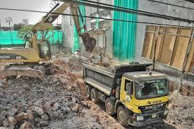
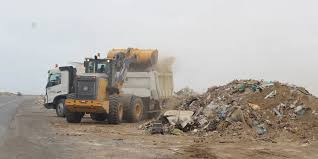
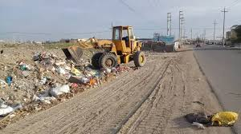
Eliminación de Desmonte & Cargas
Optimizamos la operatividad de tu frente de trabajo. Gestionamos el retiro de material excedente hacia botaderos autorizados y realizamos el traslado de maquinaria mediante remolcadores especializados.
- Limpieza rápida de desmonte post-excavación.
- Traslado de equipos pesados en cama baja / remolcador.
- Soporte ante emergencias viales y huaycos.